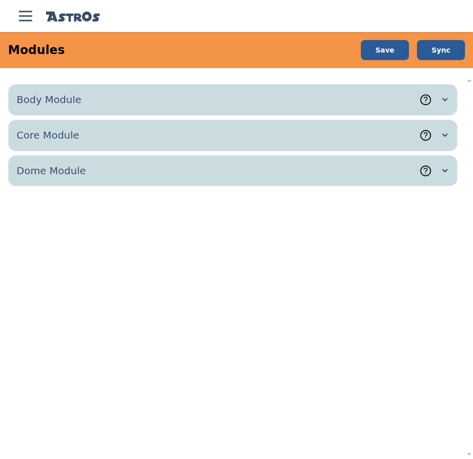
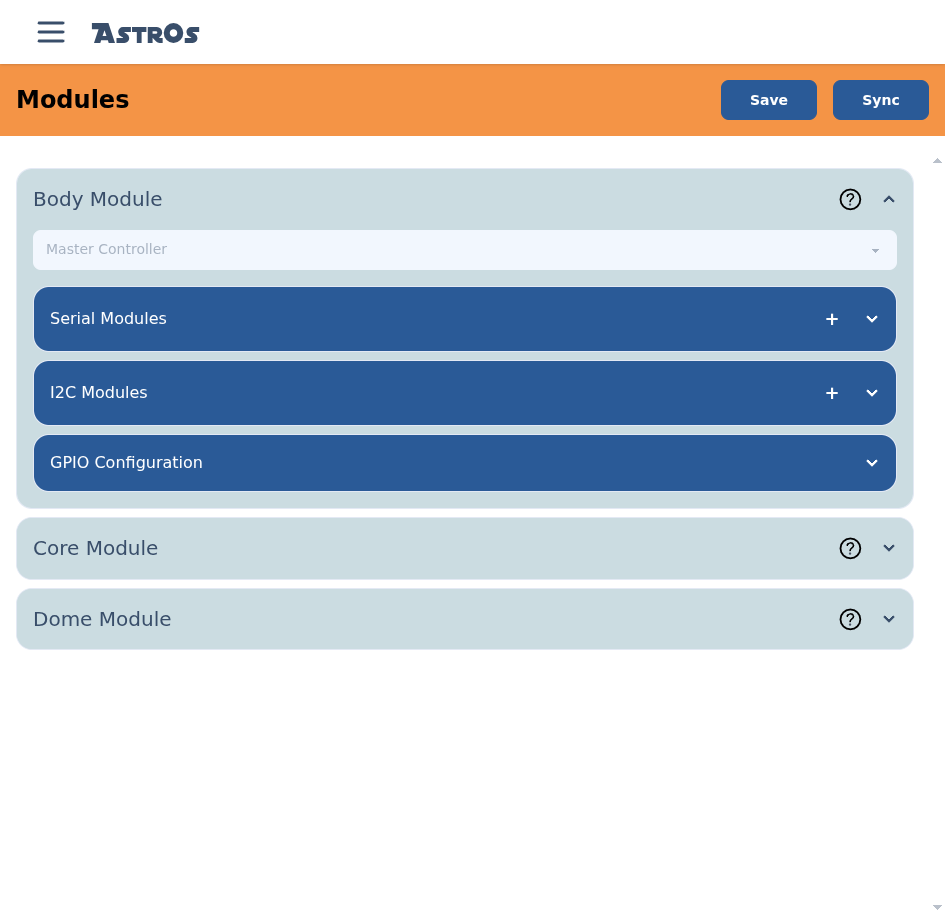
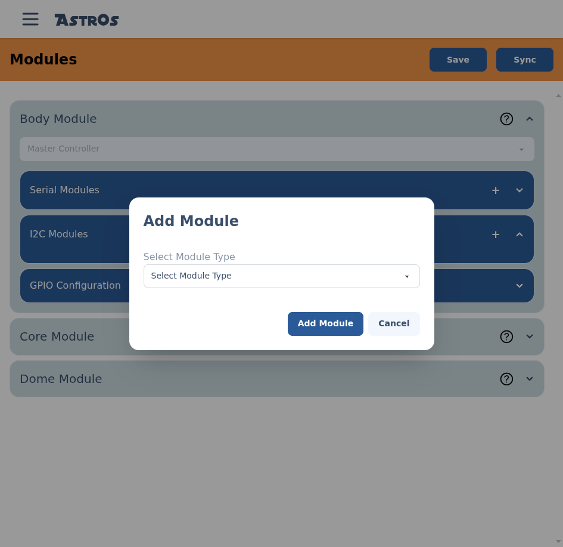
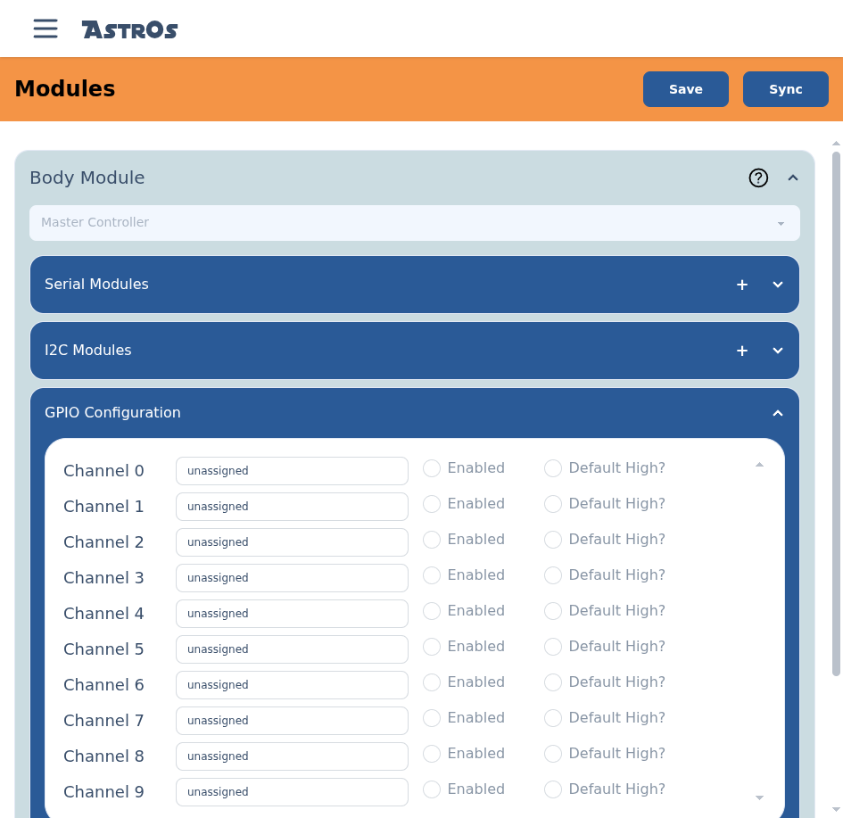

Tell each node what it controls.
The Modules screen is where you map your droid's hardware to its nodes — which node controls the Body, Core and Dome, and exactly which servos, serial devices, I²C peripherals and GPIO outputs each one owns.
Your nodes should already be paired, the master connected to the server, and every node powered on. Modules you can't see can't be configured.
§Save vs. Sync
Two buttons sit at the top of the Modules screen, and the difference matters:
- Save writes your configuration to the server. Nothing reaches the droid yet — it's safe to save work in progress.
- Sync pushes the saved configuration out to the nodes. The master forwards each padawan its slice. Nodes must be online to receive it.
Get the configuration right and Save it, then Sync once your nodes are powered and connected.
§The three locations
AstrOs groups a droid into three locations — Body, Core and Dome. Each is a collapsible card. The Body is always the master; Core and Dome are padawans (or left disabled if you don't have them).

§Step 1 — Assign a controller
Expand a location and pick its controller from the dropdown. Body is locked to Master Controller; for Core and Dome, choose the padawan that lives there (or leave it Disabled).

§Step 2 — Configure its hardware
Under each location are three hardware sections. Add only what that node actually has wired up (see Hardware & Wiring).
Serial modules
Select + on Serial Modules and choose the device type. For servos, pick Pololu Maestro; sound and motion boards (such as Human Cyborg Relations or the Kangaroo X2) and a Generic device are also options. Servos run through the Maestro — there's no separate servo board to configure. See Configure a Pololu Maestro for its settings, or Other serial modules for the rest.
I²C modules
Select + on I2C Modules and choose the device type to add an I²C peripheral on the STEMMA QT bus. See I²C modules for the details.

GPIO configuration
Open GPIO Configuration to set up the node's ten on/off output channels —
listed Channel 0–9, wired to GPIO D2–D11.
Each channel has a Name, an Enabled toggle, and a
Default High? toggle that sets its power-on state — for relays, lights, smoke, or
anything you switch from an animation.

§Step 3 — Save, then Sync
When every location is mapped, select Save. Then, with your nodes powered and the master connected, select Sync to push the configuration out to the droid.
§Confirm it took
Open the Status dashboard and check each node reports healthy and in-sync. If a node shows out-of-sync, Save and Sync again with it online.